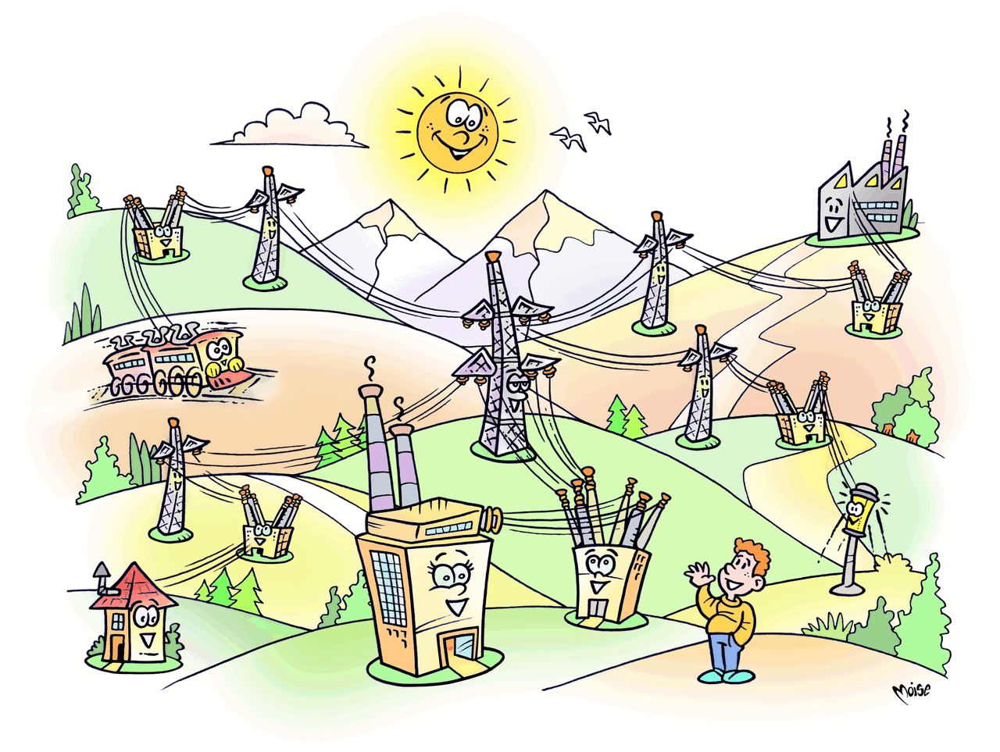

Reti elettriche
Una volta prodotta dalle centrali, l'energia elettrica deve raggiungere le nostre case, le fabbriche, i negozi… Questo avviene tramite le reti elettriche, collegate come in una grande ragnatela, che consentono la trasmissione e la distribuzione dell'energia.
Le reti di trasmissione, ad alta tensione (380 kV - 220 kV - 150 kV), trasportano l'energia dai luoghi di produzione fino ai grandi agglomerati industriali (che necessitano di elevate potenze) e alle aree urbane. Questo avviene tramite elettrodotti, per lo più aerei, lunghi anche centinaia di chilometri.
La rete di trasmissione ha anche la funzione di interconnettere i centri di produzione, monitorare i flussi di elettricità e ottimizzare la produzione. Questa funzione (dispacciamento) consente di coordinare la produzione delle centrali secondo le necessità di utilizzazione, garantendo in ogni istante l'equilibrio tra domanda e offerta e governando e riallocando le risorse in modo da ridurre gli sprechi energetici. Ad esempio nelle ore notturne, in presenza di consumi ridotti, alcune centrali possono essere portate a regimi di produzione inferiori.
L'energia ad alta tensione è trasportata dagli elettrodotti fino alle porte della città o dei distretti di distribuzione. Qui, enormi autotrasformatori ne riducono notevolmente la tensione;
l'energia elettrica quindi è veicolata tramite elettrodotti o cavi interrati alle cabine di trasformazione primaria, dove la tensione viene ulteriormente abbassata (media tensione) per essere immessa nelle reti di distribuzione.
Le reti di distribuzione rappresentano l'ultima fase nel percorso di consegna dell'elettricità all'utilizzatore finale. Sono per lo più interrate e formano unfitto reticolo interconnesso, lungo, solo in Italia 1.230.000 chilometri (oltre trenta volte la lunghezza dell'Equatore).
Si dividono in reti a media tensione e reti a bassa tensione. Le reti a media tensione (compresa tra 6,3 kV e 27 kV) veicolano l'energia all'interno delle città e dei distretti di distribuzione collegando le cabine di trasformazione primaria. L'elettricità prosegue il suo viaggio su elettrodotti minori o cavi isolati nel territorio urbano per giungere alle cabine di trasformazione secondaria dove la tensione viene portata al valore di consegna all'utente e, attraverso le reti a bassa tensione (230 - 400 V), raggiunge uffici, negozi e abitazioni.
La distribuzione dell'energia elettrica prosegue all'interno degli edifici dove vi è un punto di consegna, costituito dal contatore, collegato per alimentare i diversi carichi agli impianti elettrici privati degli utenti finali.
